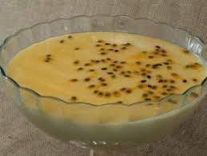

Foto do Mousse de Maracujá
Ingredientes
- 02 maracujás maduros
- 01 lata de leite condensado
- 100g de açucar refinado
- 1/2 litro de leite
- 01 pacote de gelatina incolor
Modo de Preparo
- Hidrate a gelatina na água, e depois dissolva em banho-maria
- Misture todos os ingredientes em um liquidificador(exceto as sementes de maracujá)
- Bata os ingredientes no liquidificador, em potencia máxima, por 2 minutos
- Coloque o mousse em um recipiente e decore-o com as sementes de maracujá
- Coloque o mousse na geladeira, deixando em refrigeração por aproximadamente 4 horas
Informações Nutricionais